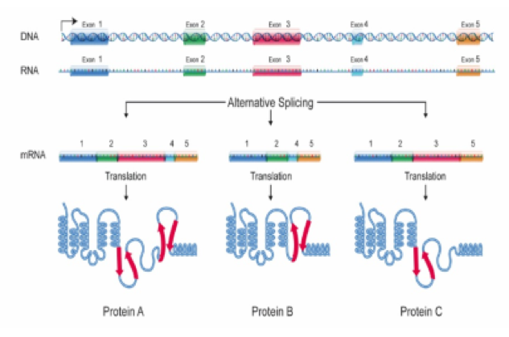
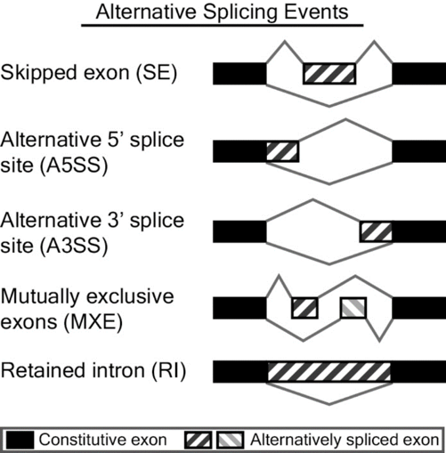

针对可变剪接分析(Alternative splicing, AS)，我们采用 rMATS 软件作分析，它是一种从重复的 RNA-seq数据中检测不同AS的强大而灵活的统计分析方法，它不仅可以对可变剪接事件进行分类，还可以进行不同样本间可变剪接事件的差异分析。除了进行非配对重复样品的分析，我们的方法还包括了专为配对重复样品分析的模式，比如针对对照模式匹配的临床 RNA-seq 数据集的案例。
图6.1 可变剪接形成示意图
rMATS软件对可变剪接事件分类如下图所示：
图6.2 可变剪接分类示意图
可变剪接差异分析包括可变剪接事件定量及表达差异显著性分析。每个可变剪接事件对应两个Isoform，分别为Exon Inclusion Isoform和Exon Skipping Isoform，如下图所示。分别对两个Isoform进行表达量统计，并除以其有效长度，得到校正后表达量，然后计算Exon Inclusion Isoform在两个Isoform总表达量的比值，最后进行差异显著性分析，结果如下表所示:
表9 可变剪接差异分析结果
| ID | GeneID | geneSymbol | strand | exonStart | exonEnd | upstreamES | upstreamEE | downstreamES | downstreamEE |
|---|---|---|---|---|---|---|---|---|---|
| 18017 | ENSG00000140416 | TPM1 | chr15 | + | 63353911 | 63353987 | 63353396 | 63353472 | 63354413 |
| 18035 | ENSG00000140416 | TPM1 | chr15 | + | 63353396 | 63353472 | 63353067 | 63353138 | 63353911 |
| 18038 | ENSG00000140416 | TPM1 | chr15 | + | 63340746 | 63340906 | 63336255 | 63336351 | 63349183 |
| 19449 | ENSG00000039560 | RAI14 | chr5 | + | 34813678 | 34813765 | 34812284 | 34812313 | 34814687 |
| 21227 | ENSG00000104852 | SNRNP70 | chr19 | + | 49605370 | 49606844 | 49604646 | 49604728 | 49607890 |
| 31373 | ENSG00000112081 | SRSF3 | chr6 | + | 36567597 | 36568053 | 36566625 | 36566760 | 36568928 |
| 33032 | ENSG00000138326 | RPS24 | chr10 | + | 79799961 | 79799983 | 79796951 | 79797062 | 79800372 |
| 33035 | ENSG00000138326 | RPS24 | chr10 | + | 79799958 | 79799983 | 79796951 | 79797062 | 79800372 |
| 34795 | ENSG00000198467 | TPM2 | chr9 | - | 35684728 | 35684743 | 35684484 | 35684547 | 35685060 |
| 35439 | ENSG00000163359 | COL6A3 | chr2 | - | 238303229 | 238303268 | 238296224 | 238296827 | 2.38E+08 |
注：
(1)ID：可变剪接事件编号
(2)GeneID：可变剪接事件所在基因编号
(3)geneSymbol：可变剪接事件所在基因名称
(4)chr：可变剪接事件所在染色体
(5)strand： 可变剪接事件所在链的方向
(6)exonStart_0base：发生该可变剪切事件的外显子起始位置
(7)exonEnd：发生该可变剪切事件的外显子终止位置
(8)upstreamES：发生该可变剪切事件上游exon起始位置
(9)upstreamEE：发生该可变剪切事件上游exon终止位置
(10)downstreamES：发生该可变剪切事件下游exon起始位置
(11)downstreamEE：发生该可变剪切事件下游exon终止位置